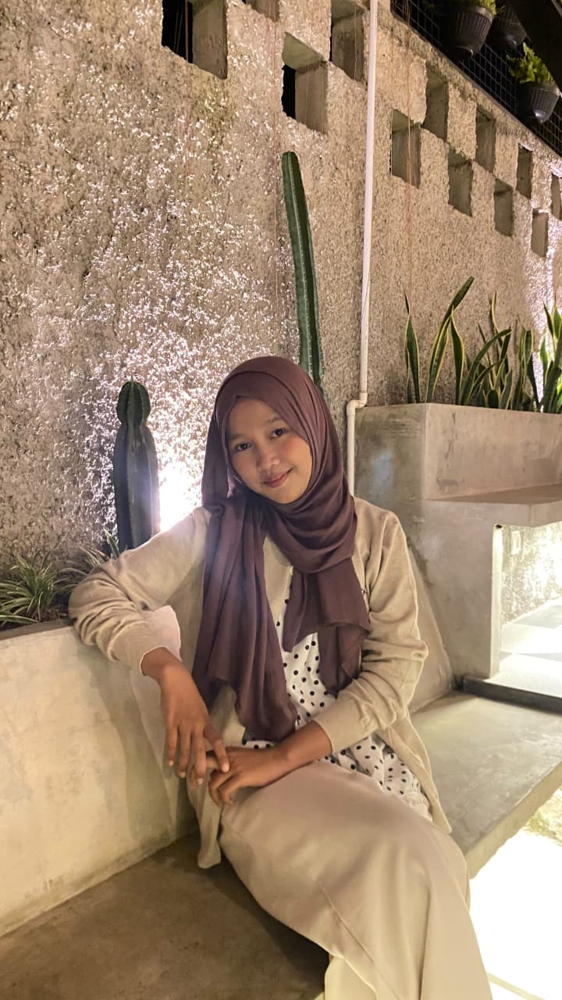

2024 — Sekarang
S1 Teknik Informatika
Universitas Ma'arif Nahdlatul Ulama • Fokus pada desaindan teknologi informasi.
PORTOFOLIO DIGITAL SAYA
Saya tertarik pada desain visual, pengolahan data, dan fotografi. Saya senang mengubah ide menjadi pengalaman digital yang sederhana dan bermanfaat.

Terus belajar, terus berkarya01 / KENALI SAYA
Saya adalah mahasiswa Teknik Informatika yang senang mengeksplorasi teknologi dan kreativitas. Bagi saya, belajar bukan hanya memahami teori, tetapi juga mencoba, membuat, mengevaluasi, dan memperbaiki sesuatu.
Saat ini saya sedang mengembangkan kemampuan di bidang desain dan visual storytelling melalui fotografi.
Saya terbuka untuk berkolaborasi dalam proyek, kegiatan organisasi, maupun kesempatan belajar yang dapat menambah pengalaman.
Mari terhubung02 / KEMAMPUAN
Daftar berikut adalah contoh. Sesuaikan levelnya dengan kemampuan yang benar-benar kamu miliki.
03 / PERJALANAN
2024 — Sekarang
Universitas Ma'arif Nahdlatul Ulama • Fokus pada desaindan teknologi informasi.
2021 — 2024
MA DARUSS'ADAH • Ilmu Pengetahuan Alam.
2022 — Sekarang
Mengikuti tutorial, kelas daring, seminar, dan latihan proyek mandiri.
04 / PENGALAMAN
Pengalaman organisasi, kepanitiaan, volunteer, magang, atau proyek kelompok dapat ditampilkan di sini.
2025 • Kepanitiaan
saya berkontribusi membantu menjaga keamanan acara.
2025 • Proyek Tim
saya berkontribusi sebagai data analisis.
05 / KARYA PILIHAN
Pilih kategori untuk melihat karya. Ganti gambar, deskripsi, dan tautan dengan proyek milikmu.
Latihan membersihkan data, menangani missing value, mendeteksi pencilan, dan membuat visualisasi.
Diskusikan proyekKumpulan eksplorasi komposisi, cahaya, warna, dan cerita melalui fotografi.
Lihat galeri06 / SISI KREATIF
Klik foto untuk melihatnya lebih besar. Ganti gambar contoh dengan hasil fotomu sendiri.
08 / YANG BISA SAYA BANTU
Menyesuaikan cahaya dan mengedit warna dan kecerahan agar menarik.
Mendokumentasikan objek dan momen melalui eksplorasi komposisi dan pencahayaan.
09 / KATA MEREKA
Contoh tampilan testimoni. Gunakan hanya komentar asli dan dengan izin pemberi testimoni.
"Mampu bekerja sama dengan baik dan terbuka terhadap masukan selama proses pengerjaan proyek."
10 / MARI TERHUBUNG
Saya terbuka untuk pertanyaan, kolaborasi, dan kesempatan belajar bersama.
Terbuka untuk kolaborasi dan kesempatan baru.